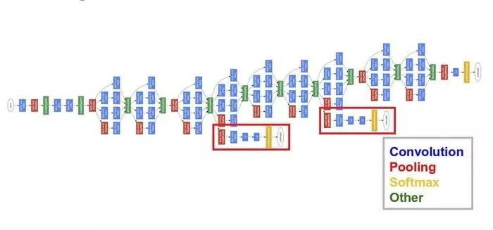

序言
先附上著名的网络结构GoogLeNet及其延伸版本，以便自己日后的学习。
Inception[V1]: 《Going Deeper with Convolutions》
Inception[V2]: 《Batch Normalization: Accelerating Deep Network Training by Reducing Internal Covariate Shift》
Inception[V3]: 《Rethinking the Inception Architecture for Computer Vision》
Inception[V4]: 《Inception-v4, Inception-ResNet and the Impact of Residual Connections on Learning》
在学习了Andrew Ng 的deeplearning.ai中的CNN课程时，顺着Ng的思路去了解了GoogLeNet这篇经典论文。GoogleNet提出了一个全新的深度CNN架构——Inception，无全连接层，可以节省运算的同时，减少了很多参数，参数数量是AlexNet的1/12，数量只有5 million，而且在ImageNet竞赛中取得了很好的成绩。
文章在引文中提到了提高深度神经网络性能最直接的方式，那就是增加网络的规模：深度和宽度。但是这样做的话肯定存在很多问题，问题是什么呢？
问题一：网络规模更大通常意味着需要更多的参数，这会使增大的网络更容易过拟合，尤其是在训练集的标注样本有限的情况下。
问题二：使用计算资源的显著增加。
紧接着，文章就这两个问题开展一系列的引用与讨论，提出论文的追求，那就是设计一个好的网络拓扑，最后引出了Inception架构，并且将Inception架构的设计初衷与思想诠释的比较到位。首先，肯定卷积神经网络的重要性，以及池化对于卷积效果的重要性，所以Inception架构的基础是CNN卷积操作。而就减小网络规模这一点来说，新的模型需要考虑一个新的网络架构，从如何近似卷积视觉网络的最优稀疏结构出发，进行探索与讨论。
Inception架构
我们来具体看Inception的架构（图1）。在这篇文章的Inception版本1中，创新点在于一层网络中存在多个不同尺度的卷积核，摒弃了AlexNet、VGG等传统著名网络的“一条线”架构。升级版的Inception，也就是这篇文章提到的Inception架构中，加入多个1×1的“瓶颈”层，来保留空间维度, 降低深度，在池化之后采用1×1卷积核来减少池化后的深度，从而主要达到减小规模的目的。
我简单的进行了两个版本Inception的操作数运算，步骤如下：
如果采用(a)的架构，假设在这一个Inception架构中，上一层输入的尺寸大小是28×28×256，采用1×1，3×3，5×5三种不同尺度的卷积核和3×3的max池化来进行该层的计算输出，那么在该层中卷积操作的ops次数计算如下：
1 | [1×1 conv，128] 28×28×128×1×1×256 |
Total：854M ops。对于[1×1 conv，128]，28×28×128×1×1×256的计算是怎么来的呢？首先对于输入尺寸为28×28×256的矩阵来说，1×1卷积核实际大小是：1×1×256，每进行一次卷积，就进行了1×1×256次运算，那么一个卷积核需要进行28×28次卷积，而一共有128个不同的1×1卷积核，所以总的运算次数为28×28×1×1×256×128。
如果采用(b)的架构，同样假设在这一个Inception架构中，上一层输入的尺寸大小是28×28×256，采用1×1，3×3，5×5三种不同尺度的卷积核和3×3的max池化来进行该层的计算输出，但是在进行以上卷积之前，在3×3和5×5卷积操作的前一步，加入1×1的“瓶颈”层，来保留空间维度, 降低深度；在池化之后采用1×1卷积核来减少池化后的深度。那么在该层中卷积操作的ops次数计算如下：
1 | [1×1 conv，64] 28×28×64×1×1×256 |
Total：358M ops。可以看到，虽然网络的复杂程度加大了，但是总的运算次数减小到之前的1/3。
Inception网络是一个由上述类型的模块互相堆叠组成的网络，从而形成了GoogLeNet。GoogLeNet是一个具有22层网络的深度学习架构，当然这22层指的是拥有权重的层，如图所示GoogLeNet的整体架构。

在中间层采用辅助分类器（Auxiliary Classification），增加了两个Loss来保证梯度回传消失的情况，这种设计结构用来减少梯度消失，ResNet是减少梯度爆炸。从中我们可以学习到一个点在于：梯度消失解决办法可以是在中间增加额外信号。
创新点
GoogLeNet的创新点都是围绕减少深度和提高性能来设计的。
1.借鉴NiN（Network in Network）中提出的思想，采用1×1 conv 来保持空间维度的同时，降低深度，也就是降低通道数量，同时1×1 conv还可以为你的网络增强非线性。
2.横向的卷积核排列设计，使得多个不同size的卷积核能够得到图像当中不同cluster的信息 ，我们称之为“多尺度”。这样融合了不同尺度的卷积以及池化，一个模块一层就可以得到多个尺度的信息，下一阶段也可以同时从不同尺度中提取的特征，可以进行多维度特征的融合，所以效果更好。把计算力拓宽，也避免了太深训练梯度弥散的问题。
3.对深度相对较大的网络来说，梯度反向传播能够通过所有层的能力就会降低。文中指出：“在这个任务上，更浅网络的强大性能表明网络中部层产生的特征应该是非常有识别力的”。通过将辅助分类器添加到这些中间层，可以提高较低阶段分类器的判别力，这是在提供正则化的同时克服梯度消失问题。后面的实验表明辅助网络的影响相对较小（约0.5），只需要其中一个辅助分类器就能取得同样的效果。
4.较高层会捕获较高的抽象特征，其空间集中度会减少。这表明随着网络转移到更高层，Inception架构中3×3和5×5卷积的比例应该会增加。而到最后一个卷积层出来的全连接，由全局平均池化替代了，减少了参数，节约了计算量。
我的思考
Inception中为什么要加入池化呢？是因为池化操作对于目前卷积网络的成功至关重要，因此建议在每个Inception中添加一个并行池化，采用步长为2的最大池化层将网络分辨率减半，应该也应该具有额外的效果。
论文中提到“Inception结构中所有的滤波器是学习到的”，怎么理解？其实，Inception的作用是代替人工来确定卷积层中过滤器的类型，或者确定是否需要创建卷积层或池化层。Inception网络不需要人为决定使用哪个fliter，或者是否需要池化，而是由网络自行确定（学习）这些参数，自行学习是否使用这些fliter或者池化，也就是说这些都是Hypeparameter。
论文中提到了这样一句话：max-pooling layers result in loss of accurate spatial information，作者也意识到了最大池化会导致某些精确的空间信息丢失，但是他在这里仅仅提到了，没有去深入思考，这让我联想到了最近的一个新模型，CapsNet，神经网络提出者Hinton的新论文。其中的思想也很新颖，而且我对CapsNet能否与迁移学习相联系有着比较大的兴趣，正在尝试着跟从实验室学长去研究。
Google公司具有很多计算力超强的集群，可以反复验证各种架构设计的优越性，所以GoogleNet整体架构的最终版，也就是论文中所呈现的，应该是一个非常好、很具有影响力的深层网络架构。